v0.3.3MITArch · Omarchy
Omamp
A Winamp-style player and MediaMonkey-style library manager for Omarchy, Hyprland and Arch.
Your own music, Spotify and internet radio sit in one keyboard-driven app that wears your Omarchy theme and changes with it.
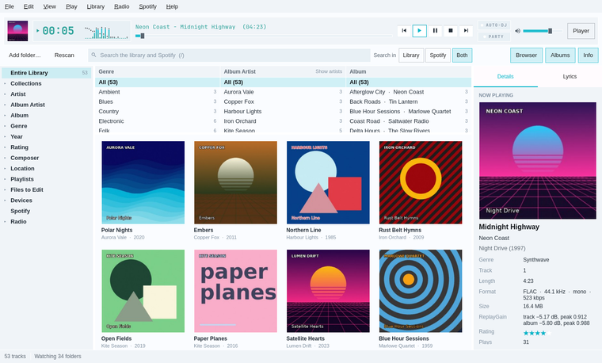
Every picture on this page is the real app, drawn with a made-up library. They follow your light or dark setting, as Omamp follows the Omarchy theme.
Built for Omarchy first
Your theme
Every colour comes from the current Omarchy theme and changes the moment the theme does. Window corners match Hyprland's, and the mini players float and pin themselves.
Your keys
Winamp's own keys still work: Z X C V B for previous, play, pause, stop and next. Ctrl+K opens a command palette, and ? lists every key.
Your desktop
The media keys, playerctl and the Omarchy bar all control it. It installs as an Arch package, shows up in the app launcher, and runs on any Linux desktop, though Omarchy is where it looks right.
ZXCVB the deck
Winamp's soul, on your desktop
The player is a Winamp 2-style deck: a green clock, a bouncing analyser, a scrolling title and the playing track's cover. Tab switches to the library, and the menu bar shows every command with its key.
The deck comes in three styles. Omarchy follows your theme, Classic is Winamp 2's charcoal frame and green readout, and Silver is MediaMonkey in the 2000s, all brushed panels and glossy buttons.
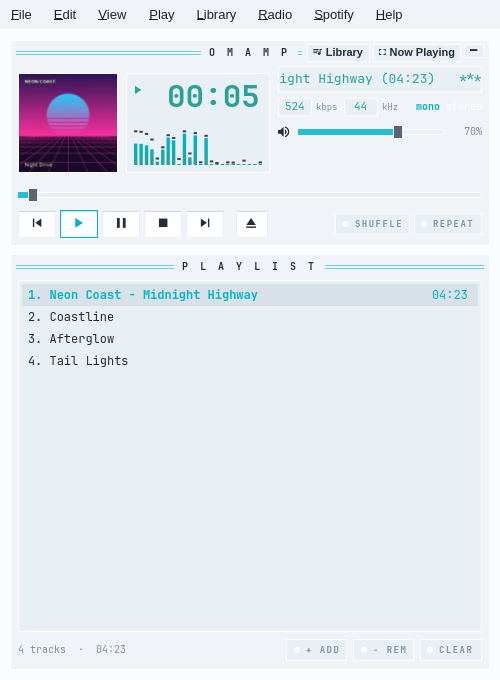
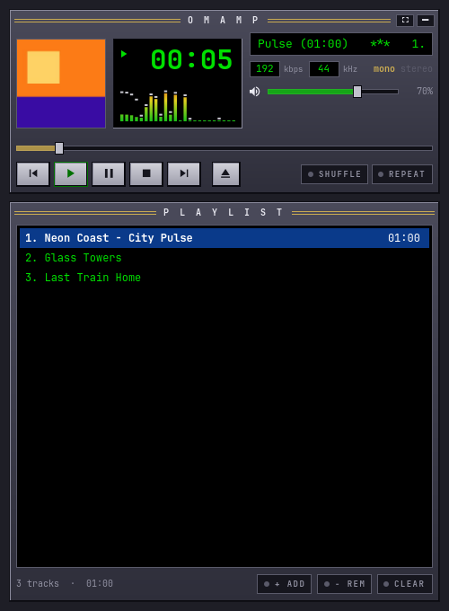
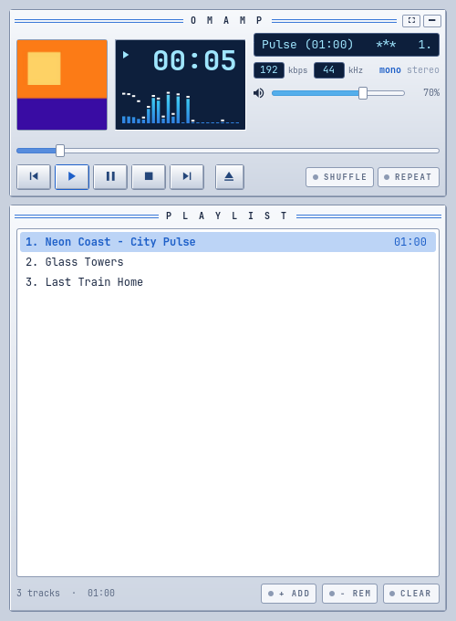
Twelve visualisers, Synthwave among them
Pick from bars, bars with peaks, a mirrored spectrum, an oscilloscope and fire, or the seven made for the wide now playing bar: Skyline, Waveform ribbon, Spectrum line, Pulse, LED matrix, Synthwave and Star field.
Synthwave draws a striped sun on the horizon with a city of spectrum bars either side, and the grid rolls towards you faster as the music builds. A Reduce motion setting calms all of them.
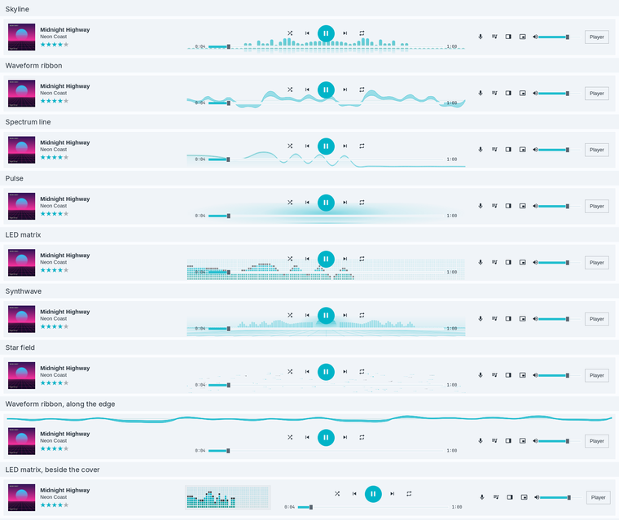
Tab the library
A library manager for people who care about their tags
Underneath the deck is a library in the spirit of MediaMonkey: a tree on the left, a column browser of genres, album artists and albums, the tracks or an album grid, and a sidebar with the cover, lyrics, notes about the artist and the album, credits and what plays next. Search takes plain words or a query such as artist:"neon coast" year:1990..1999 rating:4..
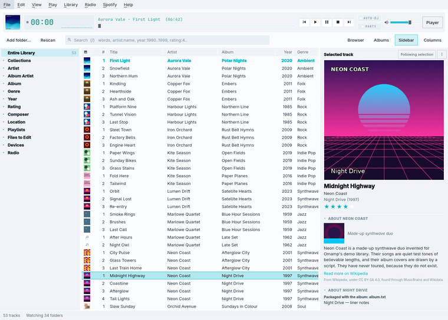
Edit a hundred tags at once
Change one track or a whole selection, fill tags from file names, and identify albums with MusicBrainz. Every change can be undone with Ctrl+Z.
Organise files with a preview
Rename and move files by a pattern such as
<Album Artist>/<Album>/<Track#:2> <Title>, and see every change before it happens. That can be undone too.Files to Edit
A list of the tracks with missing or inconsistent tags, so tidying a collection becomes a list to work through.
Duplicates, even across formats
The duplicate finder can match an MP3 and a FLAC of the same recording by how they sound.
Auto-playlists
Playlists that update themselves from a query, plus collections, Auto-DJ and party mode.
Your layout
An Art column, compact or large rows, columns you drag into order, a sidebar whose sections fold and move, and a slim or large now playing bar at the top or the bottom.
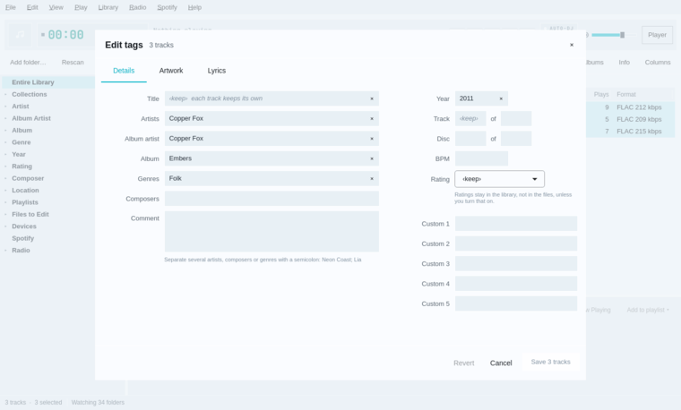
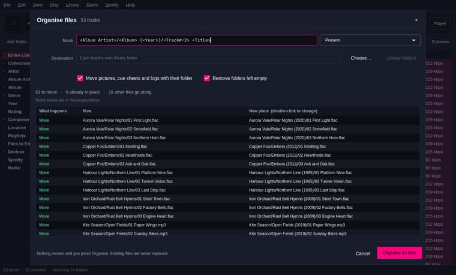
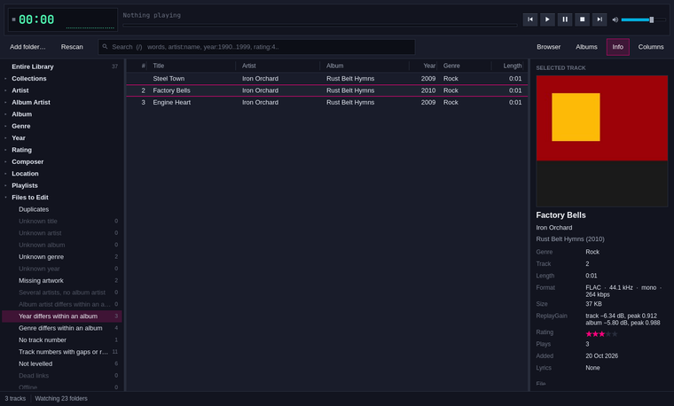
Spotify and your files
One playlist, both worlds
With Spotify switched on, your Spotify playlists, Liked Songs, saved albums and search sit in the library tree. A playlist can hold Spotify tracks beside your own files, and they play on Spotify when their turn comes.
Omamp never sees your Spotify password. It drives spotify_player, which keeps its own sign-in. Playing needs Spotify Premium.
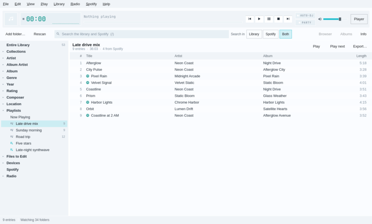
Shift+R internet radio
Nightride FM, built in
Every Nightride FM and Rekt Network channel is ready to play, each showing the song on air now. [ and ] step through the channels, and any other station can be found on radio-browser.info or added by its address.
- Nightride FM
- Chillsynth FM
- Datawave FM
- Spacesynth FM
- Darksynth
- Horrorsynth
- EBSM
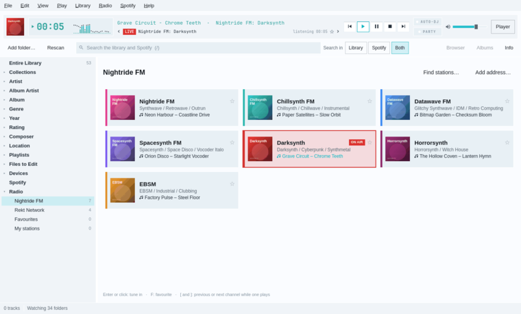
NAS, Navidrome and your phone
Music that lives on a NAS
Mount a share over SMB or NFS and Omamp scans it like a local folder, with tag editing and organising. Or add a Navidrome server and let it do the scanning. When the NAS is off, its tracks show as offline instead of vanishing.
With Navidrome, the same library reaches your phone through any Subsonic app, such as Tempus or Symfonium. Omamp can also copy music to a phone, a USB drive or a Syncthing folder, converting it on the way if you like.
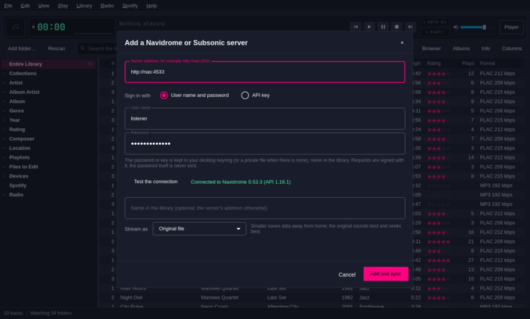
N now playing
Big when you're listening, tiny when you're working
N opens the big view: the cover, the rating, what's next, timed lyrics and a visualiser, with F11 for fullscreen. Ctrl+M shrinks Omamp to a mini player, and Ctrl+Shift+M to Winamp's windowshade.
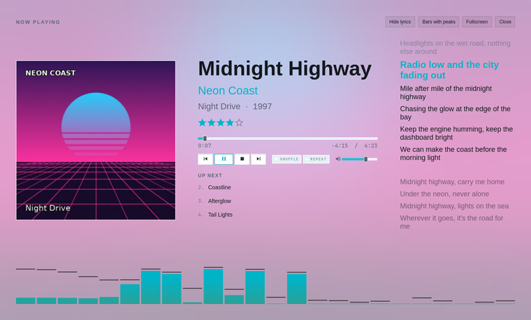
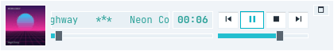
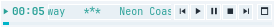
Omarchy bar plugin
In the bar, out of the way
A bar plugin shows a small cover, the play state and the track. Click it for a panel led by a large cover, with seek, transport, shuffle, repeat and volume. Omamp also sends the cover over MPRIS, so anything that shows what's playing can show it too.
Install
Omamp builds from source on Arch and Omarchy in a few minutes. An AUR package is ready and will be published soon.
-
Install what it builds against
sudo pacman -S --needed base-devel qt6-base qt6-declarative qt6-multimedia qt6-wayland \ taglib sqlite ffmpeg pkgconf ttf-jetbrains-mono-nerd -
Clone it and install it into your home folder
git clone https://github.com/matt-shearing/omamp.git cd omamp bin/install-userThis needs no
sudo. To build and install an Arch package instead, runbin/install. Either way, Omamp then appears in the app launcher (Super+Space). -
Add the extras you want
omarchy-plugin/install && omarchy-restart-shell # the bar plugin omarchy-pkg-add spotify-player # Spotifychromaprintfinds duplicates by sound, andlibsecretkeeps NAS and Navidrome passwords in the keyring.
The first time Omamp opens, a short setup walks you through where it starts, the player's look, the library's layout and your music. The quick start covers the rest, and every release is on the releases page.
Questions and honest limits
Omamp is young and changes quickly. It has a large automated test suite, but those tests run against made-up music, pretend web services and simulated network shares, so here is what that means for you.
Does Spotify work with a free account?
A free account can browse and search, but playing needs Spotify Premium. Gapless joins, crossfade, the equaliser and the visualiser work only on your own files, because Spotify's sound never passes through Omamp.
Has it been tried on a big, real library?
Not yet. Search stays quick with 200,000 tracks, but those were generated. A real NAS, a real Navidrome server, the MediaMonkey import and device sync to a real phone were all tested against stand-ins. If something breaks on your collection, please open an issue.
Can I bring my MediaMonkey library across?
Yes. The MediaMonkey import brings ratings, play counts, history and playlists across, though it has not yet been run on a real MediaMonkey database.
Do I need Omarchy?
No. Omamp runs on any Linux desktop with Qt 6. Omarchy is where it looks right, because that is where it takes its colours from the theme and where the bar plugin lives.
What goes online?
Tags, covers and lyrics from web services, and scrobbling, happen when you ask for them. The web metadata guide lists each service and exactly what leaves your machine. Last.fm scrobbling needs your own API key.
What languages does it speak?
English only for now, though every string is ready for translation.
Is the gapless engine ready?
The native engine, with gapless playback, crossfade, ReplayGain and the equaliser, is still marked experimental. Qt Multimedia plays by default.